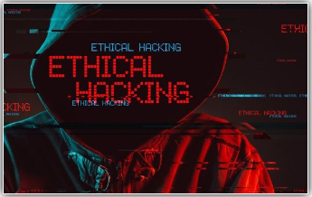

Le 21 Novembre en 1969, le tout premier lien ARPA Network naquit. Ce succéda ensuite un enchaînement de développement qui conduisit donc à la création de l’internet que nous connaissons aujourd’hui. Le Web est un important utilisateur du réseau Inernet. Il est le moyen de navigation le plus utilisé et est fournit par différent navigateurs (comme Google, Safari).
En effet, internet est devenu aujourd’hui notre source première de recherche. Pour un étudiant par exemple, la documentation lui deviendra plus facile d’accès sur son Smartphone en faisant une recherche simple de ce qu'il souhaite sur Google que de se déplacer à la Bibliothèque Universitaire des environs.
Elle est donc vouée à disparaître. On peut constater se phénomène à travers les informations, qui circulent beaucoup aujourd'hui dans les réseaux sociaux. On peut donc affirmer, qu'aujourd'hui, Internet a prit une place très importante dans notre société, et devient même indispensable dans certains cas !
Vous êtes sans doute actuellement en train de lire cet article de HACK&POLLUTION en vous demandant si ce que vous allez lire sera pertinent ou non, et bien le problème et tout autre ! Saviez vous que vous êtes présentement en train de polluer ? Et bien, je suis prêt à parier que non ! En effet, une simple recherche Google, la lecture d’un article (le miens y compris évidemment), le téléchargement de quelconque logiciel, l’envois d’un fichier quelconque, l’envoie d’e-mail, la réception d’une notification, la création d’un site Web, la lecture ou même l’envoie d’une vidéo YouTube, favorisent la pollution à effet de serre. On peut ajouter à cela que nous, fan de programmation et de Hacking sommes de grands acteurs, car nous créons des fichiers dans des serveurs !
Osons le dire, nous aimons pirater nos amis par pur plaisir personnel, ou obtenir des logiciels sensés être payant de manière gratuite en détournant leurs sécurités tout en partageant les copies de nos fichiers cracké à une communauté visée d’utilisateurs. Tout en fraudant, en pensant que nous venons de faire un beau geste pour d'autres, nous sommes en train de polluer ! Car oui, nous venons non pas simplement de copier un fichier sur notre ordinateur, mais en le plaçant sur le réseau d'un site, nous contribuons à la pollution. Et cela s'applique même pour tout les utilisateur
On se retrouve donc l'auteur d'un cercle de pollution (Partage → téléchargement → Partage...). Pour illustrer ses propos, Internet pollue en CO2 1,5 fois plus que le transport Aérien dans le monde ! Cette pollution et divisé en deux moitié ; 50% étant divisée entre les réseaux et data centers (qui consomment énormément en énergie éléctrique, ce qui produit aussi de la chaleur), et 50% provenant des utilisateurs (l’usage simple par connexion wifi ou data tel que la 4G entrent en compte…).
Voici l’Extrait d’un article de fournisseur-energie.com:
Bilan de la pollution émise par internet Lorsque l’on souscrit un contrat d’énergie, chez EDF ou un fournisseur autre, on peut logiquement penser que c’est notre consommation courante qui utilise le plus d’énergie, mais à tort ! Si Internet était un pays, il serait le 3ème plus gros consommateur d’électricité au monde avec 1500 TWH par an, derrière la Chine et les Etats-Unis. Au total, le numérique consomme 10 à 15 % de l’électricité mondiale, soit l’équivalent de 100 réacteurs nucléaires. Et cette consommation double tous les 4 ans !
Ainsi selon le chercheur Gerhard Fettweis, la consommation électrique du web atteindrait en 2030 la consommation mondiale de 2008 tous secteurs confondus. Dans un futur proche, Internet deviendrait ainsi la première source mondiale de pollution. https://www.fournisseur-energie.com/internet-plus-gros-pollueur-de-planete/
D’après fournisseur-energie.com, internet deviendra, en 2030 , donc la première source mondiale de pollution dans le monde !